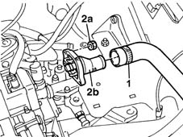
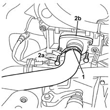
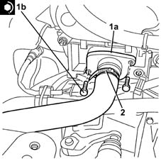

1088C30 thermostat unit - r+r
- Path
- Procedures > 10 ENGINE > 1088 ENGINE COOLING > 1088C water pump and thermostat > 1088C30 thermostat unit - r+r
- Kind
- repair procedure (removal / refitting; the operation number is the code)
- Applies to
- engines: 1.2 8v, 1.2 16v, 1.4 16v; all production periods
- Interactive page
- https://sloeber94.github.io/elrnDB-lYpsln/en/#/2428973
Applies to: engines: 1.2 8v; all production periods
 Removing
Removing
 Refitting
RefittingProceed with removal 5530B10 battery - r+r .
Proceed with removal 5530B52 Battery DRIP TRAY/SUPPORT - R.R. .
1. Loosen band and disconnect the upper coolant inlet hose to the radiator thermostat side.
2. Undo the nuts (2a) and remove the thermostat unit (2b).

Applies to: engines: 1.2 16v; all production periods
Removing
RefittingProceed with removal 1048A32 sleeve from air cleaner to intake manifold - r + r .
1. Loosen band and disconnect the upper coolant inlet hose to the radiator thermostat side.
2. Undo the bolts (2a) and remove thermostat assembly (2b)

Applies to: engines: 1.4 16v; all production periods
Removing
RefittingProceed with removal 1048A32 sleeve from air cleaner to intake manifold - r + r .
1. Loosen band and disconnect the upper coolant inlet hose to the radiator thermostat side.
2. Undo the bolts (2a) and remove the thermostat assembly (2b).
Applies to: engines: 1.2 8v; all production periods
Refitting
RemovingPlace the thermostat back in its housing and fix it tightening the nuts to the recommended torque.
 | Fastening | Component | Ø | Value (daNm) |
|---|---|---|---|---|
- | Nut | THERMOSTAT CONTAINER | M6 | 1.0 |
Connect the upper coolant inlet hose to the radiator, thermostat side, and tighten the band.
Proceed with refitting 5530B52 Battery DRIP TRAY/SUPPORT - R.R. .
Proceed with refitting 5530B10 battery - r+r .
Refill the engine cooling system with coolant 0010T20 coolant change .
Applies to: engines: 1.2 16v; all production periods
Refitting
Removing1. Place the thermostat assembly (1a) back in its housing and secure it tightening the bolts (1b) to the recommended torque.
| Fastening | Component | Ø | Value (daNm) |
|---|---|---|---|---|
1b | Bolt | THERMOSTAT CONTAINER | M6 | 1 |
2. Connect the upper coolant inlet hose to the radiator, thermostat side, and tighten the band.

Applies to: engines: 1.4 16v; all production periods
Refitting
Removing1. Place the thermostat assembly (1a) back in its housing and secure it tightening the bolts (1b) to the recommended torque.
| Fastening | Component | Ø | Value (daNm) |
|---|---|---|---|---|
1b | Bolt | THERMOSTAT CONTAINER | M6 | 1 |
2. Connect the upper coolant inlet hose to the radiator, thermostat side, and tighten the band.
Applies to: engines: 1.2 16v; all production periods
Proceed with refitting 1048A32 sleeve from air cleaner to intake manifold - r + r .
Refill the engine cooling system with coolant 0010T20 coolant change .
Applies to: engines: 1.4 16v; all production periods
Proceed with refitting 1048A32 sleeve from air cleaner to intake manifold - r + r .
Refill the engine cooling system with coolant 0010T20 coolant change .
Topics linked from this page (4)
- 0010T20 coolant change
- 1048A32 sleeve from air cleaner to intake manifold - r + r
- 5530B10 battery - r+r
- 5530B52 Battery DRIP TRAY/SUPPORT - R.R.